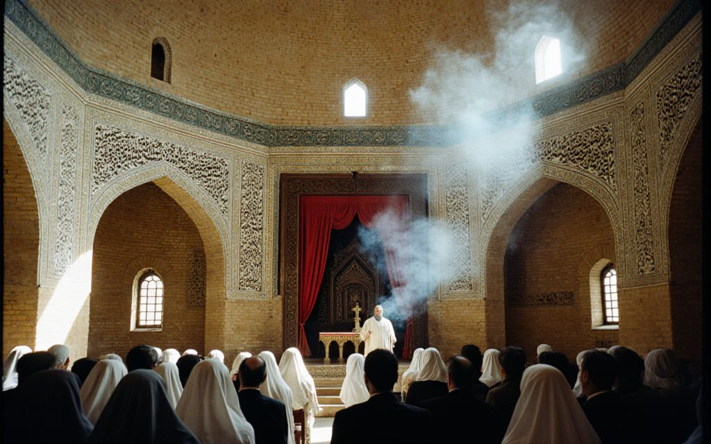
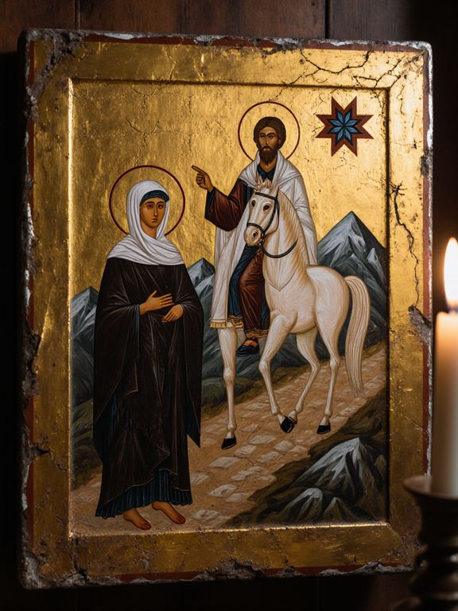
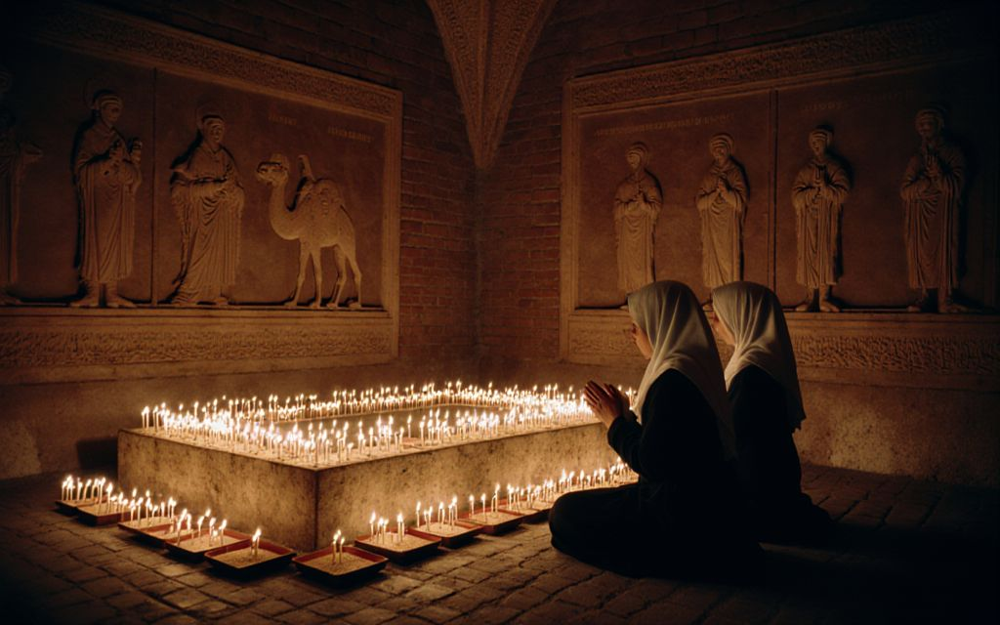

The Cathedral

The Church of St. Janyl (Iyık Janyl Chirköösü) stands on Cathedral Hill, a spur about 150 metres above the east bank of the Naryn. It was built under a charter (firman) granted in 1727 by Abd al-Rahim Biy, ruler of Kokand, in thanks for the Iradi Christian horsemen who had ridden with him against the Dzungars. The charter gave the Christians freedom of worship, freed their clergy from certain taxes and paid for a stone church. Masons from Bukhara and Ura-Tyube built it with the monks of the community, and it was consecrated in 1730. The city of Iyık Janyl grew up around it.
The church was never meant to stand on the site of the First Church of Janyl, which no one has found. Our tradition calls it a remembrance of that first church: a house built where the faithful could gather, as Janyl gathered the clans.
The building
The cathedral is a short cruciform basilica of yellow fired brick on a plinth of river stone, about 17 by 21 metres, and like every church of our tradition it faces east. The main doors at the west portal are of carved walnut, and the north and south doors stand in frames of glazed tile. Over the crossing an octagonal drum rests on squinches filled with muqarnas, the honeycomb vaulting of Central Asian builders, and carries the dome.
The dome of 1730 was lower and of plain brick. It was badly damaged in the Andijan earthquake of 16 December 1902, and between 1903 and 1907 the drum and dome were rebuilt taller and covered in the ribbed turquoise tiles that pilgrims see today. The dome rises 22 metres; with its iron cross the church stands about 25 metres high.
Inside, the church follows the East Syriac order. In the nave stands the raised bema, from which the Word is read, joined by a raised path (shqaqona) to the step before the screen. The square sanctuary (madbaha) is raised at the east end behind a carved walnut screen; the baptistery opens off it to the north and the sacristy to the south. A gallery runs round the west end of the nave. Panels of carved plaster (ganch) carry verses of the Psalms in Classical Syriac and in our own Turkic tongue written in Syriac letters, as on the old gravestones of the Chu valley.
For most of its history the church was whitewashed inside, with carved plaster, painted ornament and crosses. The gold mosaics of the vaults, the dome and the east wall, where the cross of Christ rises from the lotus in a blue mandorla among the standing saints, were made between 1996 and 2002 by an Italian workshop with gifts from Catholic charities. The stained-glass windows of the White Rider were made during the restoration of the 1990s. The statues in the nave were also given in those years. Their place is still discussed by the Council of Hierarchs; for now they stay, as part of the church’s recent history.
The icon of St. Janyl

The principal icon of the cathedral, painted in the 18th century, shows St. Janyl on the mountain road with the White Rider, who points to the star of Irad. Families hid it, with vestments and books, in the mountains when the church was closed in 1937; it was brought back in 1992. Pilgrims may venerate the icon outside the times of the Holy Qurbana. Please do not use flash.
The cathedral’s great painting, Yusup Ayyubov’s The White Rider Shows the Way (1913), was painted for the feast of that year and given to the cathedral. Since 1998 it has been on loan to the Irad Palace of Art across Cathedral Street, where it can be seen in the Ayyubov Hall.
The crypt of Mar Gewargis

Beneath the altar is the crypt and the tomb of Mar Gewargis (died 1744), the first bishop known to have lived at the church, who gave the library its first books and the charters of the khans. Sandstone friezes of the early missionaries of the Silk Road surround the tomb. Pilgrims go down to light beeswax candles and to pray for the sick and for a safe road over the passes. Candles are sold at the candle desk by the north door. The Holy Qurbana is celebrated in the crypt every Friday evening.
The bells
For its first century and a half the church called the faithful with the nakus, the wooden board of the East Syriac churches, beaten with mallets in the porch. In 1884 the Russian diocese of Turkestan gave four bells, and a bell tower was built for them in 1883–84 about 25 metres north-west of the church: the church had been built without bells, and its walls were not thought strong enough to carry them. The tower is of the same yellow brick on a river-stone base, about 20 metres to its cross, kept lower than the dome on purpose. They were taken down and broken up for metal in 1937, and for fifty-five years the hill had no bells. The empty tower served as a fire lookout for the grain store in the nave, which may be why it was not pulled down; a family of the upper town hid the nakus, and at Easter 1993 it was beaten again. The present five bells were cast in 1996 with gifts from the St. Janyl Mission in Chicago, among them the royalties of an American song about our bells, and first rang from a new steel frame in the tower on the Feast of the Cross that year. The largest, Janyl, weighs 1,180 kilograms. All five ring for the Solemn Qurbana on Sundays and feasts, and the great bell alone tolls for funerals and on 14 November. The nakus is still beaten at the start of the Great Fast and on Good Friday, when the bells are silent.
Listen: the five bells before the Solemn Qurbana, recorded from the esplanade.
The great bell Janyl, tolling.
Closure and return
When the Syro-Iradi Church entered into full communion with Rome in 1931, the church became the cathedral of the new archiepiscopal see. In 1937 the cathedral was closed, its clergy arrested, and the nave turned into a district grain store. It stayed one until 1992.
On 14 September 1992, the anniversary of the union, the cathedral was given back and reconsecrated by Mar Yuhanna Bakirov, the bishop of the hidden Church. Fr. Stephanos Isaev, who had served the hidden parishes of the Talas valley for forty years, celebrated the first public Holy Qurbana there since 1937. Weeks earlier the Suusamyr earthquake had cracked the dome and its drum. The restoration of 1993 to 1998, paid for by territorial grants, American heritage funds and Christian charities, repaired the dome, cleared the Soviet partitions from the nave and replaced the broken tiles.
World Heritage and conservation
In 2004 the church and the ruins of Old Iyık Janyl (Shar-i-Kuhna) across the river were inscribed together on the UNESCO World Heritage List. The hill is exposed to frost and to earthquakes. Since 2010 the cement used in the 1990s has been taken out in stages, and under the Conservation Plan adopted by the Council of Hierarchs in 2019 the dome is being retiled by hand, quarter by quarter, with lime mortar and glazed tiles made in the city’s own workshops.